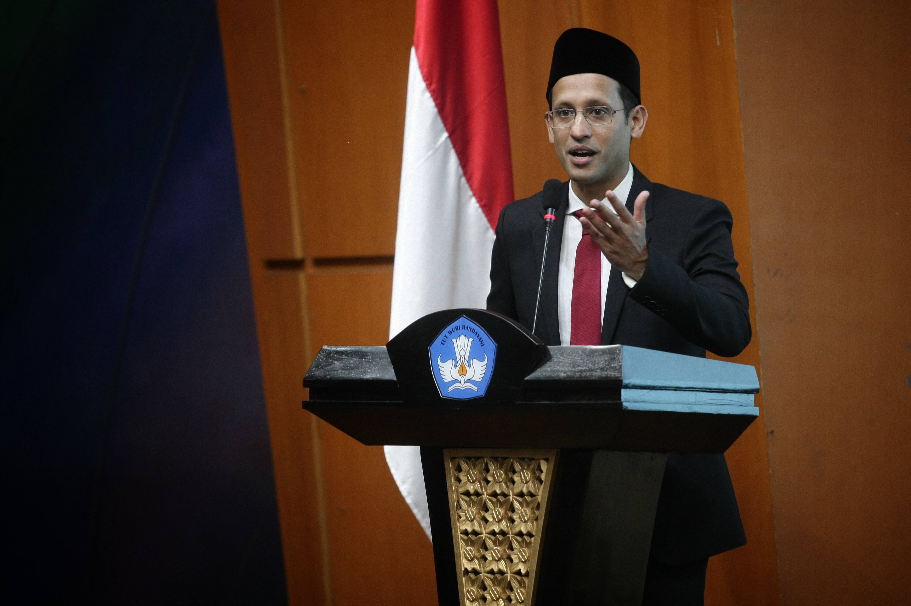

Nadiem Anwar Makarim

Menteri Pendidikan dan Kebudayaan Republik Indonesia.
Biografi Nadiem Anwar Makarim :
- 1984 - Lahir di Singapura.
- 2006-2009 - Setelah menyelesaikan sekolahnya di Harvard dengan gelar MBA, Nadiem memutuskan untuk pulang ke tanah air dan bekerja di McKinsey & Co. Nadiem menjadi konsultan McKinsey selama 3 tahun.
- 2011-2012 - Nadiem menjadi Co-Founder dan Managing Director Zalora Indonesia pada tahun 2011. Pada 2012, Nadiem memutuskan keluar dari Zalora untuk membangun perusahaan rintisan (startup) sendiri, termasuk Gojek yang pada waktu itu memiliki 15 karyawan dan 450 mitra driver. Ia mengaku telah belajar cukup banyak di Zalora, yang merupakan tujuan utamanya ketika menerima pekerjaan di perusahaan itu. Di Zalora, Nadiem memiliki kesempatan membangun perusahaan rintisan besar dan bekerja dengan sejumlah talenta terbaik di kawasan Asia.
- 2013-2014 - Sambil mengembangkan Gojek, Nadiem juga menjadi Chief Innovation Officer Kartuku setelah keluar dari Zalora.Saat awal berdiri, Kartuku tidak ada kompetitor dalam sistem pembayaran non-tunai di Indonesia.Kartuku kemudian diakuisisi Gojek untuk memperkuat GoPay.
- 2010-2019 - Nadiem mendirikan Gojek pada 2010 dan kini Gojek sudah menjadi salah satu dari 19 dekakorn di dunia, dengan valuasi Gojek mencapai US$10 miliar.Gojek pertama kali berdiri sebagai pusat panggilan, menawarkan hanya pengiriman barang dan layanan ride-hailing dengan sepeda motor. Sekarang, Gojek telah bertransformasi menjadi aplikasi besar, menyediakan lebih dari 20 layanan, mulai dari transportasi, pengantaran makanan, kebutuhan sehari-hari, pijat, bersih-bersih rumah, logistik hingga platform pembayaran digital yang dikenal dengan GoPay.Karier bisnis Nadiem Makarim di Gojek membawanya masuk dalam daftar 150 orang terkaya di Indonesia versi Majalah Globe Asia.Nadiem Makarim diperkirakan memiliki nilai kekayaan mencapai US$100 juta.
- 2019-sekarang - Pada 22 Oktober 2019, Nadiem secara resmi menyatakan bahwa dirinya mengundurkan diri sebagai Direktur Utama Gojek setelah pagi harinya dipanggil oleh Presiden Joko Widodo ke istana negara. Pada 23 Oktober 2019, Presiden Joko Widodo mengumumkan kabinet menterinya dengan Nadiem sebagai Menteri Pendidikan dan Kebudayaan.